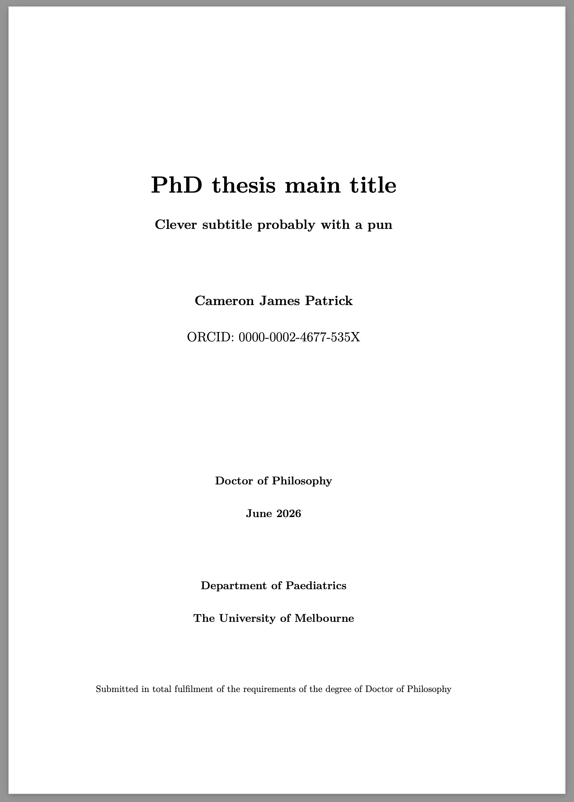

I decided to write my PhD thesis in Quarto. Between my idiosyncratic standards for the PDF output and the university’s rigid requirements for what a PhD thesis ought to look like, I knew that some degree of tweaking the formatting settings would be required. I’ve never really used Quarto for PDF output before, but since I’m fairly confident using LaTeX, I figured “how hard could it possibly be”.
This post is a slightly elaborated version of the notes I made for myself during the process, shared in the hope that it may be useful for others who want to use Quarto to write reports or theses with idiosyncratic styling.
The one piece of this post that I haven’t seen spelled out anywhere else on the web is the section on additional front matter before and after the table of contents, which took a bit of LaTeX trickery to achieve. The solution I found is better than the other alternatives I’ve seen (for my purposes, anyway), because it allows you to write the front matter in Markdown instead of LaTeX and have it present in the HTML output as well as PDF.
Basic principles
- Start by creating a “Quarto book project” using your favourite IDE (RStudio)
- It’s probably a good idea to use git and periodically commit as you mess with stuff, but I just YOLO’ed it until I had something I was happy with
- You should probably set up
renvso your package versions are tracked and reproducible.renv::init() - Most of the configuration begins in editing the YAML file,
_quarto.yml - The most basic but also most important options are documented in the Quarto PDF Options section of the Quarto manual
- Achieving more complex goals requires writing chunks of LaTeX code which you reference in the YAML (or sometimes include inline in your chapter
.qmdfiles) - Some of what I’m explaining here wasn’t documented and required reading the Quarto source code. I am not to be held responsible for any voided warranty or code that stops working with the next release of Quarto
- I’m assuming you have some familiarity with YAML, Markdown, and LaTeX; but not necessarily with Quarto. In other words, I’m writing for me-last-week. Good luck
Bibliography workflow
Thanks to Brenton Wiernik and Matthijs Hollanders on Twitter for pointing me in the right direction here.
- Use Zotero and the Better BibTeX for Zotero plugin
- (Aside: the ZotFile plugin may also be useful if/when I exceed my free Zotero PDF storage limit, although I like Zotero enough I may well just give them cash for cloud storage.)
- Set a sensible schema for naming your reference keys in the Better BibTeX settings. I’m using
auth.lower + year + shorttitle.lowerwhich generates keys like@rubin1974estimatingcausaleffects - Set Zotero “quick copy” format to Better BibTeX Citation Key and set it to use Markdown, so you can hit Command-Shift-C to copy the citation in Markdown format
- Export using the Better CSL YAML plugin (you can also set it to automatically update when your Zotero library changes), or use the R Better BibTeX package to get an automatically updated bibliography export every time you knit your document (I haven’t tried this yet)
- Grab a CSL file for your preferred bibliography and citation format and copy it into your Quarto project
- Add
bibliographyandcsltop-level keys to your YAML:
bibliography: references.yaml
csl: apa.cslI’ve also edited my references.qmd Markdown file which generates the bibliography so it has a ragged right margin (i.e. left justified, not full justified):
# References {.unnumbered}
\begingroup
\raggedright
::: {#refs}
:::
\endgroupYeeting the RStudio visual editor
If you’re like me, and can’t stand the RStudio visual Markdown editor but accidentally clicked the “Visual editor” check box when creating the project, change your YAML to say:
editor: sourceInstead of editor: visual. Or vice versa, if you prefer the visual editor.
Easy PDF tweaks (only YAML needed)
All of these go inside the format: → pdf: chunk of the YAML. They’re documented in the Quarto manual but that’s very long and sometimes unclear (partly because Quarto can produce PDF output both via LaTeX and via HTML, and different options apply to each). Here’s what I cared about enough to mess with:
- LaTeX document class: Quarto’s default templates will take advantage of the KOMA Script classes if you use those, and they seem to make some customisation nicer than the LaTeX packages I’ve used previously. So
documentclass: scrbookfor two-sided ordocumentclass: scrreprtfor single-sided (note the lack of “o” in “scrreprt”) - You can change the name of the PDF file produced, e.g.
output-file: "FirstnameLastname_thesis.pdf"(this one goes under thebook:top-level YAML section, not underformat: pdf:) - Set
keep-tex: trueso you can take a squiz at the generated TeX file. I found this helped when figuring out what I needed to change to bend the output to my whims - Enable Table of Contents, List of Figures, List of Tables;
toc-depthof three means that the Table of Contents will show up to\subsection(or###headings in Markdown):
toc: true
toc-depth: 3
toc-title: "Table of contents"
lof: true
lot: true- Section numbering:
number-depthappears to count differently fromtoc-depth, so the below will have numbered\subsection(###) but not\subsubsection(####):
number-sections: true
number-depth: 2- Paper size:
papersize: a4or you’ll get US Letter - Margins: you can either use the KOMA Script options (see below) which use some kind of fancy formula to derive margins, or you can specify options to the LaTeX
geometrypackage in your YAML. Below is what I’m currently using, copied from my MSc thesis LaTeX preamble. I can’t remember what the header and footer bits do exactly.heightroundedhelps prevent “underfull vbox” warnings by making sure the text height is a multiple of the line height
geometry:
- inner=3cm
- outer=4cm
- top=3cm
- bottom=4cm
- headsep=22pt
- headheight=11pt
- footskip=33pt
- ignorehead
- ignorefoot
- heightrounded- Indented paragraphs vs space between paragraphs:
indent: trueorindent: false. You can use KOMA Script options for greater control over the indent or skip distances but the defaults look fine to me - Spacing between lines: you can use e.g.
linestretch: 1.25orlinestretch: 1.5to get increased line spacing - As far as I can tell, you can’t choose between full justified and ragged right (left justified) in the YAML, you’ll need to add LaTeX commands to the preamble (see below)
- Font size: set the base font size used for body text, e.g.
fontsize: 11pt - I prefer the XeLaTeX engine:
pdfengine: xelatexbecause… - If you’re using the XeLaTeX engine, you can specify any (Unicode, TrueType/OpenType) system font if you don’t like the standard Computer Modern Roman look that screams “my document was made with TeX”. The TeX Gyre Math font families provide OpenType math fonts compatible with XeLaTeX that fit well with Times and Palatino, amongst others. Here’s an example of using Times New Roman and other common Microsoft fonts, alongside TeX Gyre Termes Math which provides mathematical symbols which blend in nicely with these fonts:
mainfont: "Times New Roman"
sansfont: "Arial"
monofont: "Courier New"
mathfont: "TeX Gyre Termes Math"Title page
My university has a specific requirement for the formatting of title pages, and even if it didn’t I’d still want to change the default Quarto title page because it’s kind of ugly.
To do this, we will once again need to write some LaTeX code. This time, rather than just adding extra code to the preamble, we’ll be replacing some of the built-in Quarto Pandoc templates. You can see what templates are available and what they contain by looking at the Quarto source code (!). Ignore the seductively-named title.tex because to edit the title page you will need to replace before-body.tex. Start by adding before-body.tex to the template-partials list under format: pdf: in your YAML (yeesh).
template-partials:
- before-body.texThen, in before-body.tex, we’ll add the code to create the title page. You’ll notice that this isn’t quite normal LaTeX, there’s some kind of crazy templating language going on, with directives inside pairs of $ signs. I’m not aware of any documentation on this, I just pieced it together from reading other Quarto templates.
The first few lines (copied from the standard Quarto template) enable front matter mode in LaTeX, which causes pages to be numbered in roman numerals instead of normal (arabic) digits. Later on, \mainmatter will cause the page numbering to restart from 1. The remainder of the code is LaTeX code to generate the title page, with a bit of cleverness to pull the title and author information out of the YAML. Instead of just using \maketitle built into LaTeX, we’ll make our own title page from scratch.
$if(has-frontmatter)$
\frontmatter
$endif$
$if(title)$
\cleardoublepage
\thispagestyle{empty}
{\centering
\hbox{}\vskip 0cm plus 1fill
{\Huge\bfseries $title$ \par}
$if(subtitle)$
\vspace{3ex}
{\Large\bfseries $subtitle$ \par}
$endif$
\vspace{12ex}
$for(by-author)$
{\Large\bfseries $by-author.name.literal$ \par}
\vspace{3ex}
{\Large ORCID: $by-author.orcid$ \par}
\vskip 0cm plus 2fill
{\bfseries\large Doctor of Philosophy \par}
\vspace{3ex}
{\bfseries\large $date$ \par}
\vspace{12ex}
$for(by-author.affiliations)$%
$if(it.department)$%
{\bfseries\large $it.department$ \par}
\vspace{3ex}
$endif$%
{\bfseries\large $it.name$ \par}
$endfor$$endfor$%
\vspace{12ex}
{\small Submitted in total fulfilment of the requirements
of the degree of Doctor of Philosophy \par}
}
$endif$To go along with this, you’ll also need to provide appropriate information in the book: section of the YAML:
book:
title: "PhD thesis main title"
subtitle: "Clever subtitle probably with a pun"
author:
- name: "Cameron James Patrick"
orcid: "0000-0002-4677-535X"
affiliations:
- name: "The University of Melbourne"
department: "Department of Paediatrics"
date: "01 June 2026"
date-format: "MMMM YYYY"
Additional front matter before and after the table of contents
According to my university, a PhD thesis needs to contain the following items, in this order: title page, abstract, authorship declaration, preface, acknowledgements, table of contents, list of tables, list of figures, abbreviations; the body of the thesis; references; and finally appendices.
Unfortunately, the default Quarto template places the table of contents immediately after the title page. To change this, we’ll need to edit another “template partial”, this time toc.tex. In the YAML:
format:
pdf:
template-partials:
- before-body.tex
- toc.texThen in toc.tex:
$if(toc)$
$if(toc-title)$
\renewcommand*\contentsname{$toc-title$}
$endif$
$if(colorlinks)$
\hypersetup{linkcolor=$if(toccolor)$$toccolor$$else$$endif$}
$endif$
\setcounter{tocdepth}{$toc-depth$}
$endif$
\renewcommand*\listfigurename{List of figures}
\renewcommand*\listtablename{List of tables}If you compare the above to the standard Quarto toc.tex template you’ll see that I’ve removed a heap of code. Some of that code was for presentations but most importantly I removed the \tableofcontents, \listoffigures and \listoftables commands which actually produce the table of contents and lists of figures and tables. (I’ve also added some bonus code to make the “List of figures” and “List of tables” headings in sentence case instead of title case, all modern-like.)
We’ll also need to stop Quarto from switching from \frontmatter to \mainmatter at around this point. I couldn’t find the partial template that was responsible for this, so instead I added these two lines of LaTeX to the end of before-body.tex:
\let\mainmatterreal\mainmatter
\let\mainmatter\relaxThe above code effectively neuters the \mainmatter command, until we’re ready to bring it back to life.
Now we can write the ‘chapters’ that make our extra front matter. These can be written just like normal Quarto chapters, though I added {.unnumbered .unlisted} to the end of the chapter headings so they don’t get chapter numbers and aren’t included in the table of contents.
At the end of the last section before the table of contents should appear — acknowledgements.qmd in my case — add the following LaTeX code to generate table of contents (and list of tables and list of figures, if desired):
\tableofcontents
\listoftables
\listoffiguresFinally, at the end of the last front matter section — abbreviations.qmd in my case — add this code to return the \mainmatter command to life and run it, causing the main section of the document to have ordinary page numbers, starting from 1 again:
\let\mainmatter\mainmatterreal
\mainmatterHTML output
One nice thing about Quarto is that it can produce multiple output formats from the same input. I find the HTML output particularly convenient for on-screen previewing. I haven’t messed with the appearance of the HTML output much, but here’s the YAML chunk I’m using at the moment:
format:
html:
theme: simplex
fontsize: 1.2em
linestretch: 1.7
mainfont: Helvetica Neue, Helvetica, Arial, sans
monofont: Cascadia Mono, Menlo, Consolas, Courier New, Courier
backgroundcolor: "white"
fontcolor: "black"
knitr:
opts_chunk:
dev: "ragg_png"I will probably end up writing a CSS stylesheet at some point as a form of procrastination.
Setting the output directory
You can change the directory that the HTML and other outputs are saved to. This may be useful if, for example, you want to use GitHub Pages to publish your document as a web site. GitHub Pages expects the HTML to either be in the repository root or a “docs” subdirectory:
project:
type: book
output-dir: "docs"